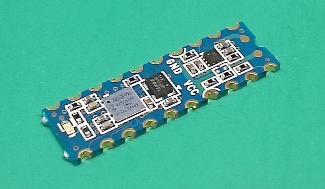
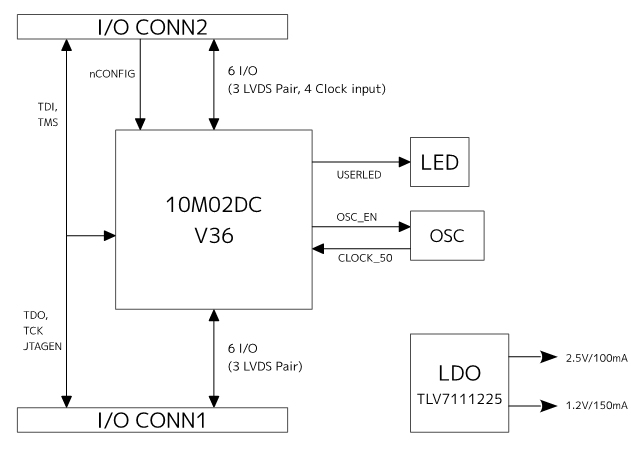
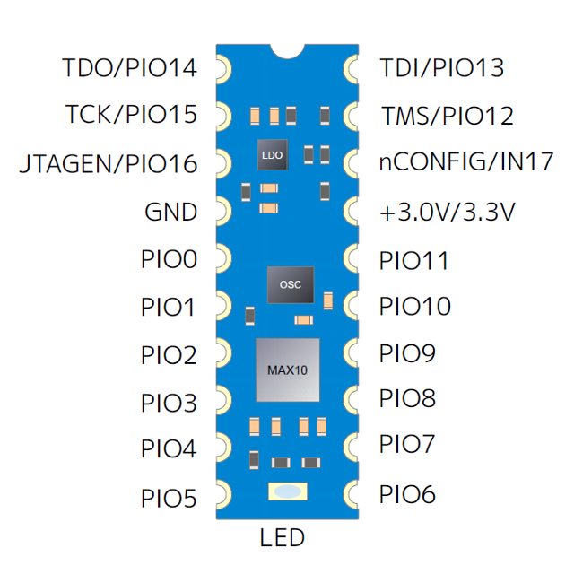
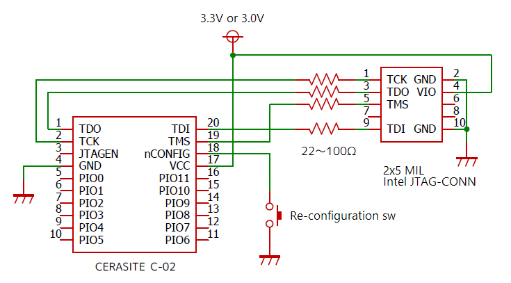

'CERASITE' - DIP scale FPGA board
Last update Mar.04, 2024
English /
日本語
Overview

'CERASITE C-02' is a very small FPGA board that realized DIP scale size 300mil width.
The Altera MAX 10 series is adopted as an FPGA device. The power supply circuit and oscillator are also mounted on board, making it ideal for installation
and prototyping as a programmable logic board that instant operation.
- 300mil width DIP20 pin shape (substrate size 25.7 mm × 7.6 mm)
- 10M02DCV36 (2kLEs, 108kbit memory, 96kbit flash, VBGA36)
- On-board OSC(50.0 MHz)
- User I/O up to 17pins
- 3.0V/3.3V single-supply
- One user LED
- Universal PCB mount available for single-sided parts mounting
- Side-end face through terminal
C-02 board block diagram

Agreements
Before using this module, please agree to the following items.
- Do not use in places exposed to direct sunlight, places with high or low temperatures, places with condensation or freezing, places with excessive shock or vibration.
Also, it cannot be used where high reliability is required.
- The package on this module is very fragile.
Bending or impacting the module will damage it.
- This module is designed for prototyping and hobby use.
There are no protections intended for general products.
Improper use may cause damage, smoke or fire.
- The developer and distributor are not responsible for any damages caused by using this module.
- We may not be able to answer questions regarding the contents of this module, measurement data, technical information, support, etc.
- Due to parts procurement and performance improvement, specifications and parts may be changed without prior notice.
Board pinout

- TDO, TCK, TDI, TMS and JTAGEN are user I/O exclusive use.
- nCONFIG is only available for input.
- For more information about device and I/O features, see max10 Device Data Sheet.
Typical connections

- Pins 3, 18, 19, 20 pull up internally and PIN 2 is pulled down internally.
- If the nCONFIG pin is used as a user I/O, it is an input-only.
- If you use the JTAG feature pin as a user I/O, the JTAGEN pin is a function switching pin and cannot be used as a user I/O. In that case, the JTAGEN pin should pull down with 1kΩ. Also, when using the JTAG function, the JTAGEN pin must be fixed at H level.
- ⚠️ Currently, write/verify/blank check failures may occur in Quartus Prime 21.1. Please use version 20.1 or earlier.
Download
C-02 Manual (PDF, Japanese)
![Cloud-Mark]() c-02_manual_v1.1.pdf
c-02_manual_v1.1.pdf
C-02 schematic (PDF)
![GitHub-Mark]() cerasite_c-02_schm.pdf
cerasite_c-02_schm.pdf
Buy now
CERASITE - DIP scale FPGA borad
Mail - support@j7system.jp (For initial defects, please contact the place of purchase.)
GitHub - osafune
©2014-2024 S.OSAFUNE, J-7SYSTEM WORKS LIMITED.